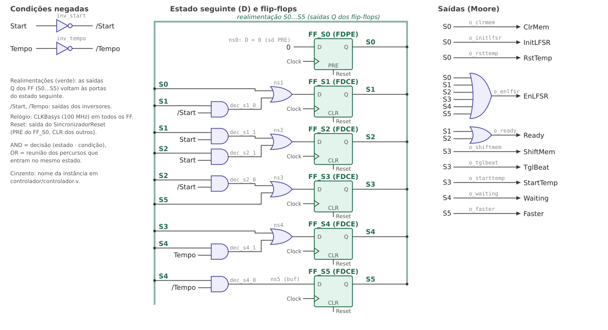

Ready e Waiting não precisam de latch SR: estão ativas em todos os estados entre acender e apagar (secção 2.4). EnLFSR está ativa em todos os estados (o LFSR avança sempre). Cada passo do jogo dura Periodo + 3 ciclos de relógio.
| Passo | O que se faz | Pág. |
|---|---|---|
| 1 | Tabela de estados primitiva (e diagrama de estados) | 3 |
| 2 | Eliminar estados redundantes: inspeção visual e partições | 3 |
| 3 | Agregar estados compatíveis: método de fusão | 3 |
| 4 | Tabela de estados reduzida | 3 |
| 5 | Codificação dos estados livre de corridas críticas (um FF por estado) | 4 |
| 6 | Tabela de transições (excitação dos FF D) | 4 |
| 7 | Valor das saídas nas transições (sem picos) | 4 |
| 8 | Equações de excitação (sem acidentes) | 4 |
| 9 | Equações de saída (sem acidentes) | 4 |
| 10 | Diagrama lógico, com as realimentações | 5 |
| 11 | Verificar e testar o circuito | 5 |
A metodologia foi feita para máquinas assíncronas; em cada passo indica-se o que muda numa máquina síncrona por realização direta (todos os FF mudam no mesmo flanco do relógio de 100 MHz).
| Estado presente | Estado seguinte (Start Tempo) | Saídas (Moore: só dependem do estado presente) | ||||||||||||
|---|---|---|---|---|---|---|---|---|---|---|---|---|---|---|
| 00 | 01 | 11 | 10 | ClrMem | InitLFSR | EnLFSR | ShiftMem | RstTemp | StartTemp | Faster | TglBeat | Ready | Waiting | |
| S0 | S1 | S1 | S1 | S1 | 1 | 1 | 1 | 0 | 1 | 0 | 0 | 0 | 0 | 0 |
| S1 | S1 | S1 | S2 | S2 | 0 | 0 | 1 | 0 | 0 | 0 | 0 | 0 | 1 | 0 |
| S2 | S3 | S3 | S2 | S2 | 0 | 0 | 1 | 0 | 0 | 0 | 0 | 0 | 1 | 0 |
| S3 | S4 | S4 | S4 | S4 | 0 | 0 | 1 | 1 | 0 | 1 | 0 | 1 | 0 | 0 |
| S4 | S5 | S4 | S4 | S5 | 0 | 0 | 1 | 0 | 0 | 0 | 0 | 0 | 0 | 1 |
| S5 | S3 | S3 | S3 | S3 | 0 | 0 | 1 | 0 | 0 | 0 | 1 | 0 | 0 | 0 |
Lida diretamente do fluxograma: uma linha por estado; uma coluna por combinação das entradas testadas (código de Gray). Sx = o estado mantém-se (estável para essa combinação). Start só interessa em S1 e S2 e Tempo só em S4: nas outras linhas o estado seguinte é igual nas 4 colunas.
Inspeção visual: duas linhas com as mesmas saídas e o mesmo estado seguinte em todas as colunas seriam redundantes. Não há nenhuma: S1 e S2 têm as mesmas saídas mas estados seguintes diferentes.
Partições (separar estados com saídas diferentes e depois os que vão para blocos diferentes):
| P0 = (S0 S1 S2 S3 S4 S5) | todos juntos |
| P1 = (S0)(S1 S2)(S3)(S4)(S5) | separados pelas saídas |
| P2 = (S0)(S1)(S2)(S3)(S4)(S5) | Start Tempo = 00: S1 → S1 ∈ (S1 S2), S2 → S3 ∈ (S3) |
| P3 = P2 | fim: 6 classes = 6 estados |
Conclusão: nenhum estado é redundante.
A tabela está completamente especificada (não há estados seguintes nem saídas indiferentes "–"), por isso dois estados só são compatíveis se forem equivalentes. O único par com saídas iguais, (S1, S2), já foi separado no passo 2: o grafo de fusão não tem arestas e não há estados a agregar.
É a própria tabela primitiva: 6 estados (S0…S5), nenhum eliminado nem agregado. Todos são precisos: S1 e S2 esperam que se carregue e depois que se largue Start; S3 (deslocar) e S5 (acelerar) duram um só ciclo de relógio; S4 espera pelo fim do tempo; S0 inicializa a arquitetura.
O enunciado impõe a realização direta: um flip-flop por estado (codificação one-hot), 6 FF em vez dos 3 de uma codificação mínima. Cada FF corresponde a um estado do fluxograma.
| Estado | Q5 Q4 Q3 Q2 Q1 Q0 | Flip-flop | Primitiva / inicialização |
|---|---|---|---|
| S0 | 0 0 0 0 0 1 | FF_S0 | FDPE: PRE = Reset, INIT = 1 |
| S1 | 0 0 0 0 1 0 | FF_S1 | FDCE: CLR = Reset, INIT = 0 |
| S2 | 0 0 0 1 0 0 | FF_S2 | FDCE: CLR = Reset, INIT = 0 |
| S3 | 0 0 1 0 0 0 | FF_S3 | FDCE: CLR = Reset, INIT = 0 |
| S4 | 0 1 0 0 0 0 | FF_S4 | FDCE: CLR = Reset, INIT = 0 |
| S5 | 1 0 0 0 0 0 | FF_S5 | FDCE: CLR = Reset, INIT = 0 |
Corridas: em cada transição mudam 2 FF (o do estado que sai vai a 0 e o do que entra vai a 1). Numa máquina assíncrona isso seria uma corrida; aqui todos os FF mudam no mesmo flanco do relógio e as entradas D só voltam a ser lidas no flanco seguinte, já estáveis (folga de 5,1 ns medida pelo Vivado): não há corridas críticas. O único acontecimento assíncrono é a libertação do Reset: se FF_S0 saísse do PRE antes de FF_S1 sair do CLR, a máquina ficava em 000000 sem sair de lá (corrida crítica). Fica resolvido com o SincronizadorReset, que ativa o Reset de imediato mas só o liberta num flanco do relógio.
Flip-flops D: a excitação é o próprio estado seguinte, D = Q+.
| EP | Q5…Q0 | Start Tempo | ES | D5 D4 D3 D2 D1 D0 | Termo |
|---|---|---|---|---|---|
| S0 | 000001 | – – | S1 | 000010 | S0 |
| S1 | 000010 | 0 – | S1 | 000010 | S1·/Start |
| S1 | 000010 | 1 – | S2 | 000100 | S1·Start |
| S2 | 000100 | 1 – | S2 | 000100 | S2·Start |
| S2 | 000100 | 0 – | S3 | 001000 | S2·/Start |
| S3 | 001000 | – – | S4 | 010000 | S3 |
| S4 | 010000 | – 1 | S4 | 010000 | S4·Tempo |
| S4 | 010000 | – 0 | S5 | 100000 | S4·/Tempo |
| S5 | 100000 | – – | S3 | 001000 | S5 |
"–" = indiferente. As outras 58 combinações de Q5…Q0 nunca ocorrem (só um FF a 1).
| Saída | Atua em | Pico numa transição? |
|---|---|---|
| ClrMem = S0 | CLR assíncrono da memória e do Beat | Não: vem diretamente do Q de FF_S0 |
| InitLFSR, RstTemp = S0 | Init / Reset síncronos | Não (Q de FF_S0) |
| EnLFSR = S0+…+S5 | Enable síncrono | Possível 0 muito curto entre flancos; o LFSR só o lê no flanco |
| Ready = S1 + S2 | LED LD0 | Possível 0 de ns em S1 → S2: invisível |
| ShiftMem, TglBeat, StartTemp = S3 | CE / Start síncronos | Não (Q de FF_S3) |
| Waiting = S4, Faster = S5 | LED / registo síncrono | Não (Q de um só FF) |
Saídas de Moore: só mudam logo a seguir ao flanco do relógio. A única saída que atua de forma assíncrona (ClrMem, no CLR dos registos) é tirada diretamente de um flip-flop, por isso nunca tem picos; as que passam por uma OR só vão para entradas síncronas ou LEDs.
Cada DSk é a soma dos termos das linhas da tabela de transições com Dk = 1. Em one-hot Qj = 1 identifica sozinho o estado, por isso cada termo é só Sj·condição (não há mapas de Karnaugh a minimizar).
| DS0 = 0 | nenhum percurso entra em S0 (só a tecla Reset, pelo PRE) |
| DS1 = S0 + S1·/Start | vem de S0, ou fica em S1 |
| DS2 = S1·Start + S2·Start | vem de S1, ou fica em S2 |
| DS3 = S2·/Start + S5 | vem de S2 ou de S5 |
| DS4 = S3 + S4·Tempo | vem de S3, ou fica em S4 |
| DS5 = S4·/Tempo | vem de S4 (sem S5: DS3 = S2·/Start + S4·/Tempo) |
Sem acidentes: um pico na lógica do D não tem efeito, porque o FF só lê D no flanco, depois de estabilizar. Start chega já sincronizada e Tempo é síncrono, por isso nenhuma entrada assíncrona chega a estas portas.
Lidas nas colunas das saídas da tabela primitiva (soma dos estados com 1):
| ClrMem = InitLFSR = RstTemp = S0 | Ready = S1 + S2 |
| EnLFSR = S0 + S1 + S2 + S3 + S4 + S5 | Waiting = S4 |
| ShiftMem = TglBeat = StartTemp = S3 | Faster = S5 |

case
(5089 verificações, Start e Tempo aleatórios, Resets fora do flanco, um só FF a 1 em todos os ciclos): OK.| Sinal | Bits | Origem → destino | Natureza | Ativo | Sincronismo | Função |
|---|---|---|---|---|---|---|
| Entradas externas (placa Basys3) | ||||||
| CLKBasys | 1 | oscilador (W5) → todos os blocos | relógio | ↑ | 100 MHz | relógio único de todo o sistema |
| BtnReset | 1 | tecla BTNU → Sincronizador do Reset | controlo externo | High | assíncrono | põe a máquina de estados em S0 (só isso) |
| BtnStart | 1 | tecla BTNC → Sincronizador | controlo externo | High | assíncrono | começa o jogo (carregar e largar) |
| Entradas do controlador (estado da arquitetura → decisões do fluxograma) | ||||||
| Reset | 1 | Sincronizador do Reset → Controlador (PRE do FF_S0, CLR dos outros) | controlo | High | ativa assínc., liberta síncr. | S0 de imediato; os 6 FF saem de S0 no mesmo flanco |
| Start | 1 | Sincronizador → Controlador | condição | High | síncrono | sincronizada (2 FF) e sem ressaltos (10 ms) |
| Tempo | 1 | Temporizador variável → Controlador | condição | High | síncrono | 1 enquanto o temporizador conta; volta a 0 sozinho |
| Saídas do controlador (comandos sobre a arquitetura; todas de Moore) | ||||||
| ClrMem | 1 | Controlador → Memória (CLR), FF Beat (CLR) | comando | High | assíncrono (CLR) | limpa as 4 posições (pausa) e apaga o LED Beat |
| InitLFSR | 1 | Controlador → LFSR32 (Init) | comando | High | síncrono | carrega a semente (com EnLFSR = 1) |
| EnLFSR | 1 | Controlador → LFSR32 (Enable) | comando | High | síncrono | LFSR avança um passo por ciclo |
| ShiftMem | 1 | Controlador → Memória (CE) | comando | High | síncrono | desloca a fila e carrega OutLFSR em Pos0 |
| RstTemp | 1 | Controlador → Temporizador variável | comando | High | síncrono | para a contagem e repõe o período inicial (0,5 s) |
| StartTemp | 1 | Controlador → Temporizador | comando | High | síncrono | começa nova contagem com o período atual |
| Faster | 1 | Controlador → Velocidade | comando | High | síncrono | (opcional) período −5 ms, mínimo 0,2 s |
| TglBeat | 1 | Controlador → FF Beat (CE) | comando | High | síncrono | troca o estado do LED Beat (uma vez por passo) |
| Ready | 1 | Controlador → LED LD0 | sinalização | High | — | jogo pronto a começar (S1, S2) |
| Waiting | 1 | Controlador → LED LD2 | sinalização | High | — | à espera do fim do tempo de um passo (S4) |
| Estado[5:0] | 6 | Controlador → LEDs LD10…LD15 | depuração | High | — | Q dos 6 flip-flops: mostra o estado ativo |
| Sinais internos da arquitetura (dados) | ||||||
| OutLFSR[1:0] | 2 | LFSR32 → Memória (Data) | dados | — | síncrono | corda nova: 00 pausa, 01 cima, 10 meio, 11 baixo |
| Pos0…Pos3 | 4×2 | Memória → Gestão dos displays | dados | — | síncrono | corda de cada display (Pos0 = esquerda) |
| Periodo[27:0] | 28 | Velocidade → Temporizador | dados | — | síncrono | tempo de um passo em ciclos de 10 ns |
| Saídas externas (placa Basys3) | ||||||
| Seg[6:0] | 7 | Gestão dos displays → cátodos CA…CG | dados (display) | Low | varrimento 2 kHz | a, g ou d conforme a corda; pausa apagado |
| DP | 1 | Gestão dos displays → cátodo DP | dados (display) | Low | — | sempre apagado (1) |
| An[3:0] | 4 | Gestão dos displays → ânodos AN0…AN3 | controlo | Low | varrimento 2 kHz | ativa um display de cada vez |
| LedBeat | 1 | FF Beat → LED LD1 | sinalização | High | síncrono | pisca ao ritmo do temporizador variável |
| OutLFSR / Pos | 00 | 01 | 10 | 11 |
|---|---|---|---|---|
| Corda (segmento) | pausa (nenhum) | cima (a) | meio (g) | baixo (d) |
| Seg[6:0] = abcdefg | 1111111 | 0111111 | 1111110 | 1110111 |